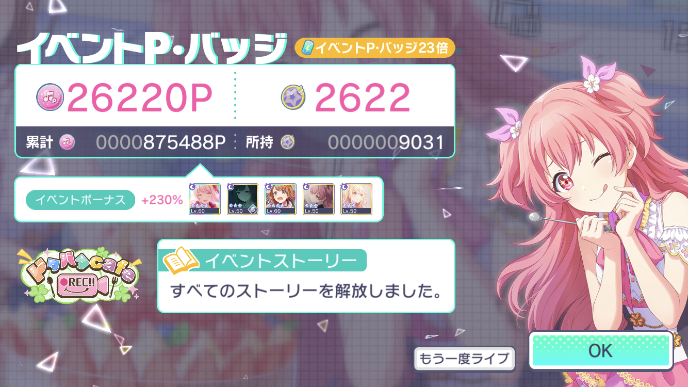
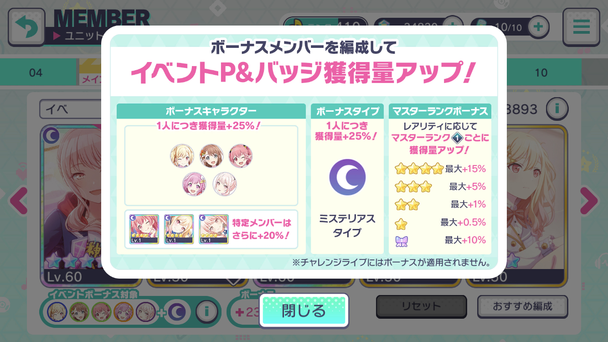
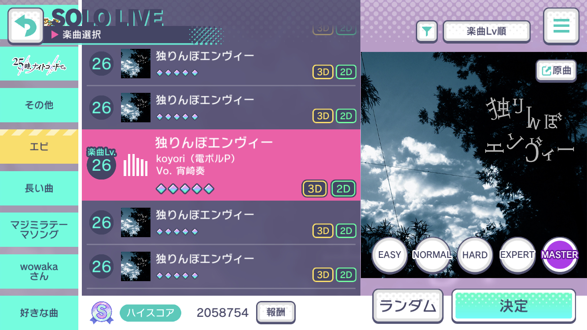
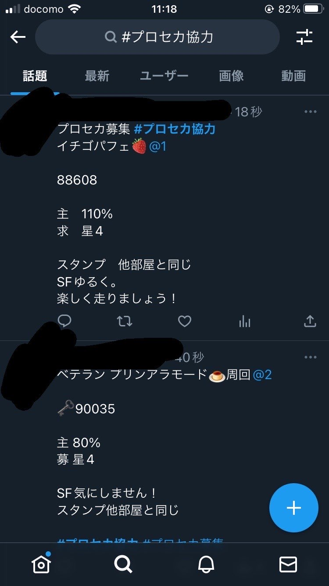

イベント
推しのために走ろう！
ライブでイベントPtを稼いでランキング上位に入りましょう。
効率よくポイントを稼ぐためのコツを教えます。
注意：他のページに比べて内容が「ガチ」になっています。
イベントとは？
毎月3回、各7~10日程度開催されます。ライブをするとイベントポイントがもらえ、期間中に獲得したイベントポイントの順にランキングがあります。好きなキャラクターのイベントの場合は、とにかくライブをしてポイントをたくさん稼ぐことになります。これを一般に「イベラン」(ひたすらライブをたくさんやることを走ることに例えて)と言います。

効率よいポイントの稼ぎ方①チーム編成
たくさんポイントを稼ぐためには、チーム編成が重要です。イベントごとに、ボーナスが付加されるキャラクターと属性が決まっています。どのキャラクター/属性にボーナスが付くかは、イベント開始前日のお知らせで分かります。
また、イベント期間中に開催されるガチャの新規カードを使用すると、さらにボーナスが付きます。すなわち、上位を狙いたい場合はまずガチャで新規カードをゲットするところから始まります。(ほしいキャラが出るまでガチャを引くことになるため、長い期間ガチャを引くための石を貯めたり、課金して石を大量に用意する必要があります。)
さらにボーナスを上げるためには、アイテムを大量消費して「マスターランク」というものを上げる必要もあります。もちろん、ほとんどのユーザはここまではやっていません。

効率よいポイントの稼ぎ方②周回楽曲
イベランをする上で最も効率の良い楽曲は「独りんぼエンヴィー」です。何といっても、1曲が約90秒と短いため、同時間内で最も回数を多くプレイすることができます(1回あたりに獲得できるポイントは低くなります)。
ライブ前後の時間を合わせても2分程度で、1時間に30回できます。このことは、イベランだけでなく、リーダー回数稼ぎやキズナランク上げなど、とにかく回数を稼ぎたいときにも利用されます。
これらのプレイヤーたちは、DNAに刻まれるレベルでこの曲をプレイしています。(なお、回数が最多のプレイヤーで30万回以上となっています。すごすぎますね。)

効率よいポイントの稼ぎ方➂仲間探し
効率曲をひたすら周回するのは、通常のマッチングでは難しいです。そこで、Twitterでの募集が盛んに行われています。「#プロセカ募集」「#プロセカ協力」などと検索すると、様々な条件を提示した多くの募集が見つかります。自分がその条件を満たしている場合、書いてある部屋番号を入力すれば、一緒に周回することができます。条件としては、周回する時間や編成の強さがあります。
また、Twitterでの募集を待つ時間ももったいない場合や、本当に上位を狙っていてTwitterでの募集より厳しい条件で強い人とマッチングしたい場合は、Discordが多く使われます。専用のサーバ(部屋)に「お手伝い」と呼ばれる人を集め(これはランナーの人脈次第です)、途切れないようにシフトを組み、ひたすら周回します。
Discordの場合、周回中はボイスチャンネルに入って雑談をしながら楽しくすることができます。
手伝いに入るわけではないもののボイスチャンネルでの会話を盛り上げる「ガヤ枠」と呼ばれる人もいます。また、睡眠時間を極力減らして周回するため、ボイスチャンネルに接続したまま寝て、サーバの誰かが起こしてあげることで寝坊を防止するという工夫も見られます。
